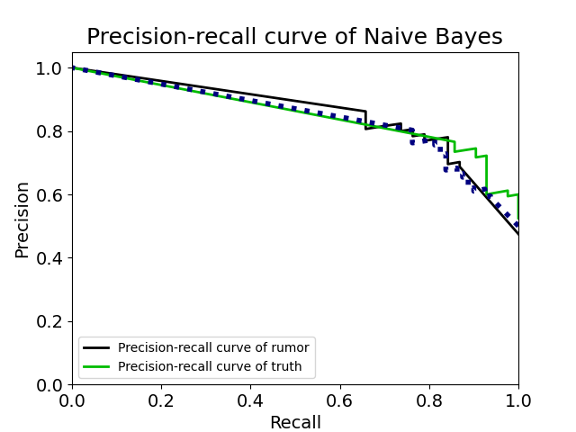
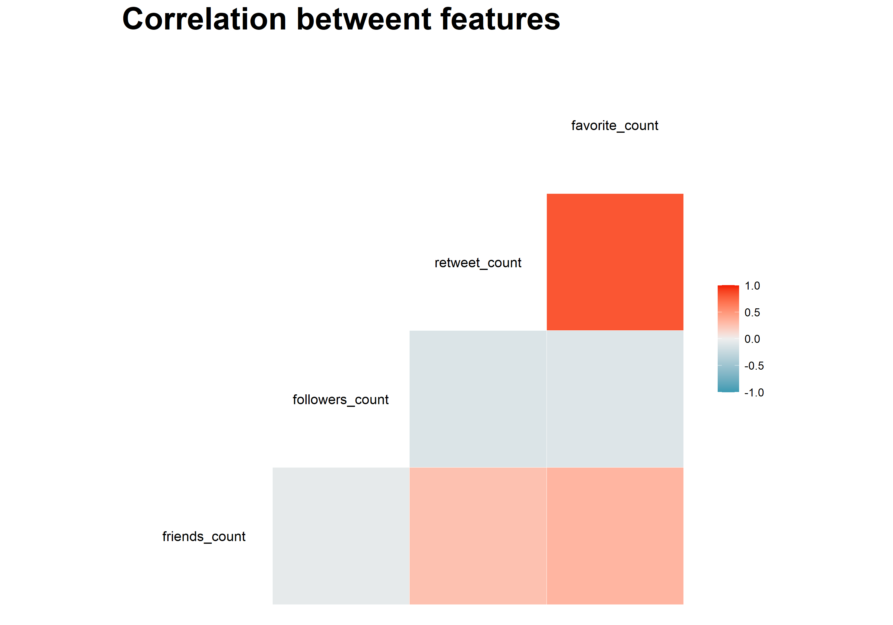

The model is built with tweet texts. A naive bayes model was built after the texts were vectorized to tell rumors from truth.
According to the learning curve, the performance on both training data and cross validation data continuously increase. As the number of examples increase, the score of training and cross validation data reaches a high position, meaning that the model is neither overfitting, nor underfitting.
According to the precision recall curve, it is easier for model to detect truth, while it is relatively hard to tell rumor from truth. This means the model is not applicable in practical use.

According to the confusion matrix, the precentage of true positive is much higher than other three statistics, this may cause by the unbalanced data. The negative sample is too small. We may need more samples.
Modeled by R
Rumor Detection Based on Tweet Performance and Account Character
The model is built with tweets performance and account features. A naive bayes model was built by these continuous variables.

According to the correlation graph, friends count and favourite count is related to each other, which is consisitent with intuition.
According to the confusion matrix, this model performs better than the previous one. The number of true positive is high and the number of false negative is 0,meaning it has low error rate.
Conclusion
The model based on account features and tweet performance is better than the model based on tweet text, this means that to detect whether a sentence is a rumor, it is hard to judge according to its content. However, it is more effective to make a decision based on the account.